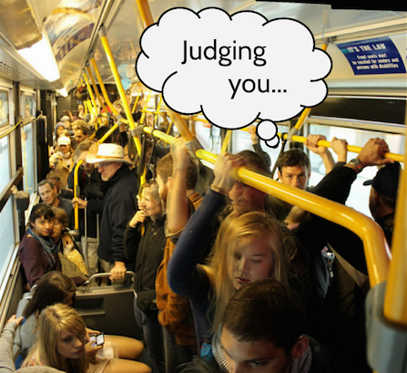

Fail this, and you'll discover why everyone in this city happens to be so "unfriendly"

If you're sitting/standing at the back of a crowded bus and your destination is two steps away, what should you do?
Continue to sit/stand in the back of the bus and shove everyone out of your way aggressively when you arrive at the bus stop
Wait until the last minute to attempt to make your way to the door and then get mad at everyone around you for not parting like the Red Sea
Panic and tell everyone around you to let go of the ceiling bars while the bus is in motion in order to let you through as if they're holding onto them for fun
Start migrating closer and closer to the nearest door as time goes by and then exit the bus in a non-panicked manner when the bus arrives at your stop
Who is NOT entitled to the seats in the front of the bus with the special labels on them, when the bus is full?
Physically disabled individuals
Elderly people
You because you had a long day at Crossfit
Pregnant women
Who at a dinner party is interested in the story of how you came to the conclusion that after 24+ years of eating bread with no issues, you decided you were gluten-intollerant last week?
Everyone!
Someone else with gluten-delusions. And if there aren't any present, nobody cares
Someone who actually suffers from celiac disease
That cute guy/girl over there with common sense
What kind of photo of yourself is appropriate for an online dating profile?
A photo of you from 5 years ago when your haircut, weight and sense of style were completely different
A photo of you in a crowd of 47 people of the same race and gender as you
A photo you took of the Grand Canyon last summer that you're not even in
A well-lit clear photo of your mug with no sunglasses or Snapchat masks to hide your features
What is the purpose of a bus driver?
To drive a bus and hand you your ticket once you've paid your appropriate fare
To answer every question you've ever had about public transportation, rent in the city and bird watching.
To help you plan your bus route to get to the "Full House" house
To tell each individual confused person when their next stop is coming up